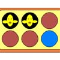

Los pollitos
Descripción|  | Para el problema de representación de los pollitos, se plantea lo siguiente: Nos encontramos con una huevera que contiene 10 huevos. |
En un primer momento, todos los huevos son blancos, pero cada vez que se selecciona uno cambiará a azul, de azul a rojo y de rojo, finalmente, a pollito. Cada vez que se selecciona un huevo además de cambiar el estado del mismo, cambian el de sus vecinos. Por último, hacer patente que si se selecciona un pollito, volverá a ser un huevo blanco.
RepresentaciónA partir de este enunciado hemos tomado como estado la fase de gestación en la que se encuentran los 10 huevos que componen la huevera.
- Estado inicial: Todos los huevos son blancos.
- Estado objetivo: En todos los huevos hay un pollito.
A partir del estado inicial se crea el espacio de estados, aplicando una serie de operadores que hemos definido, basándonos en el enunciado:
- SEL_00 "Selecciona el huevo (0,0)"
- SEL_01 "Selecciona el huevo (0,1)"
- SEL_02 "Selecciona el huevo (0,2)"
- SEL_03 "Selecciona el huevo (0,3)"
- SEL_04 "Selecciona el huevo (0,4)"
- SEL_10 "Selecciona el huevo (1,0)"
- SEL_11 "Selecciona el huevo (1,1)"
- SEL_12 "Selecciona el huevo (1,2)"
- SEL_13 "Selecciona el huevo (1,3)"
- SEL_14 "Selecciona el huevo (1,4)"
Para este problema se pueden aplicar todos y cada uno de los operadores independientemente del estado en el que nos encontremos, estos operadores carecen de precondición.
EstrategiasLas estrategias no informadas que hemos incluido, son:
- Búsqueda con Profundización Iterativa (IDS)
- No se llega a la solución, debido a que se queda infinitamente ciclando.
- Búsqueda Primero en Anchura (BFS)
- No se llega a la solución, debido a que se queda infinitamente ciclando.
- Búsqueda Primero en Profundidad (DFS)
- No se llega a la solución, debido a que se queda infinitamente ciclando.
- Búsqueda con límite de Profundidad (DLS)
- No se llega a la solución, debido a que se queda infinitamente ciclando.
Además de una heurística, que consiste en la suma total de los pasos que les quedan para llegar a ser pollito a todos los huevos que componen la huevera, a estas estrategia la hemos denominando HeurísticaPollitos.
- Tiempo de ejecución: Aprox. 521 ms.
- Número de nodos expandidos: 3547
- Solución: En 13 pasos(SEL_01, SEL_01, SEL_01, SEL_14, SEL_04, SEL_04, SEL_12, SEL_12, SEL_02, SEL_01, SEL_00, SEL_00, SEL_10)
En este problema nos encontramos que las estrategias no informadas, no nos ayudan para la resolución del problema. Esto se debe a que ninguno de los operadores tiene precondición, por lo que todos ellos se pueden aplicar a cualquier estado, esto hace que el árbol sea enorme, y se acabe incurriendo en ciclos. Gracias a la heurística que hemos implementado, conseguimos que el problema se solucione en un número de pasos bastante aceptable.